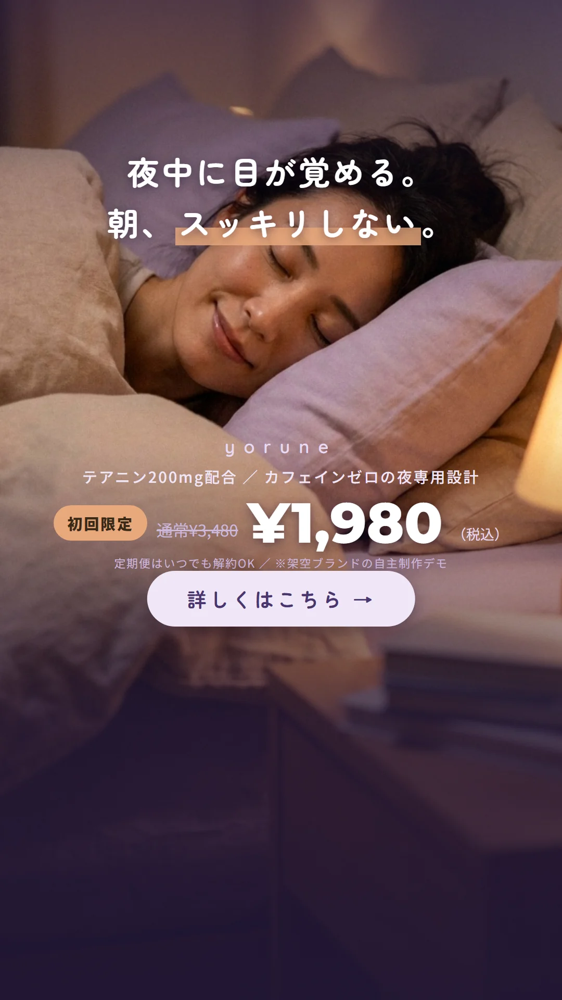

INSTAGRAM BANNER SAMPLES
Instagramバナー制作サンプル 11枚
掲載バナーについて
すべて架空ブランドの自主制作サンプルです。実在する店舗・商品・料金・キャンペーンではありません。
フィード（1:1）・ストーリーズ（9:16）・カルーセル（4:5）の3形式を掲載しています。原寸は各1080pxで制作し、1/3縮小（スマホのフィード表示相当）でも文字が読めることを確認しています。バナー1枚から、シリーズ展開・サイズ違いの展開までご相談いただけます。
スイーツフェア 四季シリーズ
フィード 1:1（1080×1080）× 4枚
架空パティスリー「PATISSERIE SAISON」の期間限定フェア告知。写真を全面に使い、フェア名・期間・ラインナップの3要素を同じ書式で組んだシリーズ設計です。写真の差し替えだけで季節展開できます。
美容サロン 初回オフ訴求
フィード 1:1（1080×1080）× 1枚
架空サロン「Lulia」の新規向け広告。髪質改善の悩み訴求と、通常価格からの初回30%OFFを価格の対比で見せる定番構成です。
睡眠サプリ ストーリーズ広告
ストーリーズ 9:16（1080×1920）× 1枚
架空ブランド「yorune」の縦型広告。悩み共感フック→成分の数字→初回価格の流れで、ストーリーズのUIに重ならないセーフゾーン内に情報を収めています。

英語コーチング カルーセル投稿
カルーセル 4:5（1080×1350）× 5枚
架空サービス「TALKIE」のオーガニック投稿。「やりがちな3つの間違い」型のフックで表紙→間違い3枚→まとめ＋保存誘導の5枚構成。完読率を優先して5枚以内に収めています。
写真素材の出典
- スイーツフェア（春）: Unsplash（撮影: Astra Virtually）
- スイーツフェア（夏）: AI生成画像（レタッチ済み）
- スイーツフェア（秋）: Unsplash（撮影: Jarrett）
- スイーツフェア（冬）: Unsplash（撮影: Max Griss）
- 美容サロン・睡眠サプリ: AI生成画像（レタッチ済み）
- 英語コーチング カルーセル: 写真不使用（HTML/CSSによる文字組み）
掲載しているのは自主制作のサンプルです。実案件では、商材の実写真・ブランドカラー・実際のキャンペーン内容をヒアリングのうえ制作します。掲載サイズ以外（正方形→ストーリーズ等）への展開も対応します。